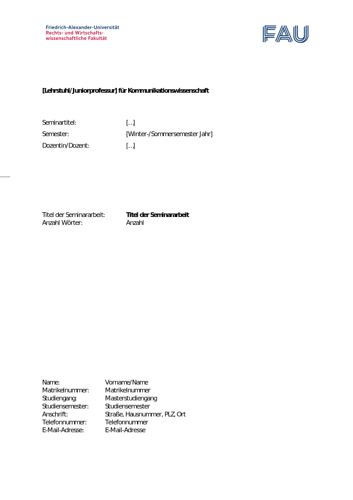

1 Allgemeine Hinweise
1.1 Hinweise zur Gültigkeit dieses Leitfadens
Der Leitfaden gilt für alle Seminar-, Bachelor- und Abschlussarbeiten, sofern nicht explizit anders angegeben. Sind Elemente des Leitfadens nicht auf das Format der Arbeit anwendbar, z. B. bei nicht-empirischen Arbeiten, Essays, u.Ä., gelten die übrigen anwendbaren Abschnitte.
1.2 Zentrale Gütekriterien
Für studentische wissenschaftliche Arbeiten sind insbesondere die folgenden Kriterien relevant:
Einleitung und Zuschnitt des Themas für das gegebene oder gewählte Ziel
Recherche der relevanten Informationen in der Fachliteratur
Aufbereitung und gedankliche Durchdringung der Informationen
Erkenntnisgewinn der Arbeit
Darstellung in Text, Grafiken und Tabellen
Gestaltung anhand formaler Kriterien des wissenschaftlichen Arbeitens
Wie Sie diese Gütekriterien optimal erfüllen und eine erfolgreiche Abschluss- oder Seminararbeit am Lehrstuhl ablegen können, erfahren Sie in diesem Dokument. Bitte lesen Sie sich das Dokument daher aufmerksam vor der Erstellung Ihrer wissenschaftlichen Arbeit durch.
1.3 Sprache
Wissenschaftliche Arbeiten am Lehrstuhl und der Juniorprofessur können grundsätzlich auf Deutsch oder Englisch geschrieben werden. Bitte beachten Sie zudem die Anweisungen im Seminar bzw. die Hinweise Ihrer Betreuer*innen.
1.4 Umfang, Schriftbild und Druck
Bachelorarbeiten sollten einen Umfang von etwa 8.000 – 10.000 Wörtern (ca. 30 Seiten), Masterarbeiten von etwa 18.000 – 20.000 Wörtern (ca. 60-70 Seiten) haben. Deckblatt, Anhang, Verzeichnisse, Abbildungen, etc. zählen nicht in diese Begrenzung. Der Umfang von Seminararbeiten richtet sich nach den Vorgaben im jeweiligen Seminar, ist im Allgemeinen aber deutlich kürzer als bei Abschlussarbeiten. Abbildungen und Tabellen sind im Text zu erwähnen und in der Nähe der Erwähnung, nicht im Anhang, zu platzieren. Tabellen und Abbildungen mit weiterführenden, nicht essenziellen Informationen oder Materialien können in den Anhang und müssen nicht im Text erwähnt werden.
Alle Abschlussarbeiten sind entweder in Times New Roman 12pt oder Calibri 11pt zu formatieren. Nutzen Sie für Fließtexte 2-fachen Zeilenabstand.
Lassen Sie rechts und links einen Rand von 2.5-3cm. Fügen Sie in Kopf- oder Fußzeile Seitenzahlen und (kurz-)Titel ein.
Abschlussarbeiten müssen in zwei- (Bachelorarbeiten) bzw. dreifacher (Masterarbeiten) Ausführung gedruckt und gebunden sowie in elektronischer Form (z. B. USB-Stick, CD) beim Prüfungsamt abgegeben werden.
2 Ablauf einer Abschlussarbeit
2.1 Deadlines, Bewerbung, Vergabe der Themen
Aktuelle Informationen zur Bewerbung, Themenvergabe, Anmeldung und Abgabe entnehmen Sie bitte der Website des Lehrstuhls für Kommunikationswissenschaft. In Abbildung 1 finden Sie einen Überblick über den Ablauf.
2.2 Exposé
Bitte beachten Sie den Zeitplan auf der Website für die Deadline zur Abgabe des Exposés
Nach den ersten Vorbesprechungen werden Sie gebeten, eine ausführlichere Projektskizze zum gemeinsam vereinbarten Thema zu erstellen und an Ihre Betreuungsperson zu senden. Ziel des Exposees ist es sicherzustellen, dass ein gemeinsames Verständnis von Umfang, Thema und Zielsetzung der Arbeit entsteht. Das Exposee ist die Grundlage Ihrer Arbeit und skizziert die weitere Ausarbeitung vor.
Im Exposee erläutern Sie kurz in schriftlicher Form, in welchem Problemzusammenhang das Thema steht, welche Aspekte und Unteraspekte das Thema hat, welche Forschungsperspektive Sie einnehmen möchten und welche Methode(n) zur Beantwortung der Forschungsfrage verwendet werden soll. Das Dokument sollte insgesamt 2-4 Seiten Text (A4, gleiche Formatierung wie die Abschlussarbeit) umfassen und Folgendes beinhalten:
Name, Matrikelnummer, Studiengang, Fachsemester, Kontaktdaten
Arbeitstitel („Working Title”)
Ausgangslage, Beschreibung des Themenfeldes und Vorschlag einer Fragestellung (ca. 200 Wörter)
Kurzer Forschungsstand (ca. 100 Wörter)
Begründung für die Wahl des Themas, Relevanz, Erkenntnisinteresse (ca. 100 Wörter)
Ziele, Forschungsfragen (Hypothesen)
Evtl. Methodik
Grobgliederung (maximal bis Gliederungsebene 2)
Literaturliste (erste gesammelte Literatur, Basisliteratur)
Grober Arbeits- und Zeitplan (Projektaktivitäten)
3 Formalia
3.1 Vorurteilsfreie Sprache
3.1.1 Allgemeine Hinweise
Wir empfehlen, in wissenschaftlichen Arbeiten vorurteilsfreie, geschlechtergerechte Sprache zu verwenden. Im Rahmen kommunikations- und sozialwissenschaftlicher Forschung beschäftigen wir uns mit Menschen mit einer Vielfalt von (Geschlechts-) Identitäten, daher ist es wichtig, diese Realität auch in wissenschaftlichen Arbeiten zu reflektieren und zu respektieren. Dies schließt ein, ist aber nicht beschränkt auf:
Geschlechtergerechte Sprache, z.B. Autor*innen statt Autoren
Vorurteilsfreie Sprache, z.B. sollten Sie keine Adjektive als Nomen für die Beschreibung von Personen(-gruppen) nutzen
Hierarchisieren Sie keine Unterschiede zwischen Menschen, z.B. indem Sie gesellschaftlich dominante Gruppen in einem Graph über anderen Gruppen darstellen
Quelle und weitere hilfreiche Informationen: APA-Styleguide zu vorurteilsfreier Sprache
3.1.2 Hinweise zur geschlechtergerechten Sprache
Wir empfehlen neutrale Formulierungen oder Formen, die alle Geschlechtsidentitäten einschließen, z.B. Schüler*innen, Studierende
Sie können neutrale Formen mit „:” oder „*”1 und/oder Partizipien (‑ierende) bilden
Sie können neutrale Begriffe nutzen, z.B. Person, Beschäftigte
In englischen Texten können Sie „they” im Singular nutzen
Das Verwenden des zwar grammatikalisch korrekten, aber nicht inklusiven generischen Maskulinums fließt nicht negativ in die Bewertung ein, wir raten aber dennoch davon ab (s. o.).
3.2 Deckblatt und Verzeichnisse
Ihre wissenschaftliche Arbeit sollte ein Deckblatt haben (für ein Beispiel siehe Abbildung 2)

Das Deckblatt sollte folgende Informationen enthalten
Name der Universität, des Fachbereichs und des Lehrstuhls/der Juniorprofessur
Optional: Logo oder Siegel der Universität
Modulbezeichnung
Art der Arbeit (und Seminartitel bei Seminararbeiten)
Betreuer*in oder Dozent*in des Seminars
Titel der Arbeit
Name, Vorname
Studiengang mit Schwerpunkt
Zahl der Studiensemester und Fachsemester
Anschrift mit Telefonnummer
E-Mail-Adresse
Sie benötigen außerdem:
- ein nummeriertes Inhaltsverzeichnis mit Seitenzahlen, sowie
- Abbildungs-, und/oder
- Tabellenverzeichnisse, wenn Sie Abbildungen und/oder Tabellen in Ihrer Arbeit verwenden. Textverarbeitungsprogramme wie Microsoft Word können diese automatisch erstellen.
Ein Abkürzungsverzeichnis ist nicht notwendig. Führen Sie stattdessen zentrale Abkürzungen im Text ein und verzichten Sie ansonsten auf nicht geläufige Abkürzungen.
3.3 Eidesstattliche Erklärung
Alle wissenschaftlichen Arbeiten, die Sie als Prüfungsleistungen einreichen, müssen eine Eidesstattliche Erklärung enthalten:
Eidesstattliche Erklärung
{Ich versichere/Wir versichern}, dass {ich/wir} die Arbeit: “{Thema}” ohne fremde Hilfe und ohne Benutzung anderer als der angegebenen Quellen angefertigt {habe(n)} und dass die Arbeit in gleicher oder ähnlicher Form noch an keiner anderen Prüfungsbehörde vorgelegen hat. Alle Ausführungen, die wörtlich übernommen wurden, sind als solche gekennzeichnet.
{Unterschrift}
Ort, Datum {vollständiger Name}
Hinweise: {Platzhalter} in Abbildung 3 durch entsprechende Inhalte ersetzen. Bei Gruppenarbeiten müssen alle Beteiligten eine eigene Eidesstattliche Erklärung unterschreiben.
4 Inhalte einer wissenschaftlichen Arbeit
Wissenschaftliche Arbeiten können diverse Formate einnehmen. Die Struktur ist vom Gegenstand abhängig, häufig wird aber eine Struktur wie im Folgenden verwendet.
4.1 Gliederung
4.1.1 Typische Gliederung
Insbesondere bei empirischen Arbeiten oder Literaturüberblicken wird die folgende typische Struktur verwendet. Abhängig von Inhalt und Art der Arbeit, ist es nötig, von diesem Schema abzuweichen.
Ihre Gliederung sollte maximal drei Ebenen beinhalten. Kennzeichnen Sie diese numerisch, z. B. 1., 1.3, 1.4.2, etc. Für eine genauere Unterscheidung können Sie auf vierter Ebene eine Überschrift zu Beginn eines Absatzes (eingerückt) einbauen, indem Sie die Überschrift fett setzen und mit einem Punkt abschließen, z. B.:
Wohlbefinden
Wohlbefinden wird definiert als… [Rest des Absatzes]
4.1.2 Beispielgliederung
Beispielgliederung auf erster Ebene einer empirischen Arbeit:
Abstract (nur bei Abschlussarbeiten; erscheint nicht im Inhaltsverzeichnis)
Inhaltsverzeichnis (nur bei Abschlussarbeiten; erscheint nicht im Inhaltsverzeichnis)
Einleitung
Theorie und Forschungsstand
Methodik
Ergebnisse
Diskussion
Literaturverzeichnis
Anhang, inkl. Tabellen- und Abbildungsverzeichnissen
Im Folgenden wird auf die einzelnen Abschnitte der Arbeit eingegangen. Alle Abschnitte sollten sinnvoll ineinandergreifen (roter Faden).
4.2 Abstract
Ein Abstract ist nur für Abschlussarbeiten notwendig, nicht für Seminararbeiten. Im Abstract werden kurz und knapp alle zentralen Inhalte der gesamten Arbeit dargestellt. Das Abstract ist für Leser*innen ein zentrales Entscheidungskriterium für die Relevanz der Arbeit. Ein wissenschaftliches Abstract sollte kurz, aber vollständig sein und die wichtigsten Aspekte der Arbeit (Fragestellung, Relevanz, Forschungslücke, Methode/Design, zentrale Ergebnisse, Implikationen) von Anfang bis Ende skizziert werden.
Anforderungen: Das Abstract sollte 150-300 Wörter lang sein. Bei Abschlussarbeiten auf Deutsch ist zusätzlich zum deutschen Abstract ein englisches Abstract notwendig.
4.3 Einleitung
Zu Beginn einer wissenschaftlichen Arbeit sollte der Untersuchungsgegenstand dargestellt werden. Die Einleitung hat v.a. drei Ziele:
Die Relevanz des Themas herausarbeiten (wissenschaftlich, gesellschaftlich, …)
Einen Aus- und Überblick über die Arbeit bieten
Das Ziel der Untersuchung darstellen
In vielen Fällen ist es ratsam, in der Einleitung implizit oder explizit eine forschungsleitende Frage aufzustellen. Diese hilft, den roten Faden durch die gesamte Arbeit herauszuarbeiten. Anhand der forschungsleitenden Frage können Sie prüfen, ob nachfolgende Inhalte für Ihre Arbeit zentral sind (= sie tragen zur Beantwortung der forschungsleitenden Frage bei) oder weggelassen werden sollten (= sie tragen nicht zur Beantwortung bei).
Jeder wissenschaftliche Text benötigt eine Einleitung.
Umfang: ca. 5% des Gesamtumfangs
4.4 Hintergrund
Der Hintergrund bildet das theoretische Kernstück der Arbeit. Hier sollen bisherige Theorien/Konzepte/Modelle sowie der Kenntnisstand empirischer Forschung zur forschungsleitenden Frage aufgearbeitet werden.
Dazu sollen Sie zentrale Literatur identifizieren und den theoretischen Hintergrund herausarbeiten. Bei der Recherche kann es helfen, zunächst eine zentrale Studie zu suchen, und über dort referenzierte Literatur weitere Quellen zu finden (sog. “backward search”). So können auch ältere, besonders zentrale Beiträge identifiziert werden. Solche Werke werden wahrscheinlich in gleich mehreren Artikeln referenziert. Zusätzlich können neuere Studien zum Thema durch einen Blick in die Beiträge, die eine Schlüsselquelle seit Erscheinen zitiert haben, helfen (sog. “forward search” oder “citation search”, bspw. über Google Scholar).
Bei der Recherche stellt sich häufig heraus, dass der Umfang eines Themengebietes den Rahmen der Arbeit sprengen könnte. In diesen Fällen sollten Sie Ihr Thema spezifizieren. Der wissenschaftliche Beitrag einer Arbeit ist größer, wenn ein enges, klar definiertes Thema sehr gut behandelt wird, als wenn ein breites Thema oberflächlich behandelt wird. Z. B. könnte die Forschungsfrage „Wie hängt die Smartphone-Nutzung mit Wohlbefinden zusammen?” zu „Wie hängen arbeitsbezogene Smartphone-Benachrichtigungen mit empfundenem Stress zusammen?” spezifiziert werden. Solche Eingrenzungen des Themas sollten Sie inhaltlich oder theoretisch begründen können.
Umfang: ca. 20-40% (kleinerer Anteil bei empirischen, größerer Anteil bei theoretischen/literaturbasierten Arbeiten)
4.5 Methodik
Der Methodik-Abschnitt sollte Lesende dazu in die Lage versetzen, Ihre Arbeit zu reproduzieren. Das beinhaltet beispielsweise die transparente Darstellung von Such-, Einschluss und Ausschlusskriterien bei einem Literaturüberblick und die Beschreibung der Stichprobe, verwendeter Materialien und des Vorgehens bei empirischen Arbeiten.
Verwendete Materialien, z. B. Fragebögen, Code-Bücher oder Experimental-Stimuli, gehören in den Anhang.
Umfang: ca. 15-30%
4.6 Ergebnisse
Hier werden die Ergebnisse Ihrer Erhebung, Literaturrecherche, Interviews, etc. dargestellt. Üblicherweise wird hier noch keine Interpretation der Ergebnisse vorgenommen. Gerade bei nicht-quantitativen Arbeiten kann in manchen Fällen aber eine stärkere Integration mit Aspekten der Diskussion oder Theorie sinnvoll sein.
Wichtige Regeln:
Lateinische Abkürzungen werden kursiv gesetzt und Leerzeichen zwischen mathematischen Operatoren eingesetzt (z. B. N=154❌ vs. N = 154✅)
Üblicherweise werden zwei Nachkomastallen angegeben, bei kleinen Zahlen (z. B. p-Werten) werden drei Nachkommastellen angegeben: M = 15.4383 ❌ M = 15.43 ✅
Statistiken mit einem Wertebereich von 0 bis 1 werden ohne führende Null angegeben: p = 0.002 ❌ p = .002 ✅
Verwenden Sie einen Punkt als Dezimaltrennzeichen, Kommas zwischen Statistiken und Semikolons, um Sinnabschnitte zu trennen: (t(123) = 4.32, p < .001)
Geben Sie p-Werte immer exakt auf drei Nachkommastellen an, außer der Wert ist kleiner als .001, dann geben Sie den Wert mit dem „kleiner als” (<) Zeichen an: p = .000 ❌ p < .05 ❌ p < .001 ✅ p = .045 ✅
In Tabellen und Abbildungen können Sie signifikante Zusammenhänge oder Effekte durch Sternchen kennzeichnen. Etabliert haben sich * für p < .05, ** für p < .01 und *** für p < .001. Eine Erklärung dieser Zeichen gehört in die Hinweise zur entsprechenden Tabelle/Grafik.
Umfang: ca. 10-20%
4.7 Diskussion
Hier sollten Sie 1) die Ergebnisse aufgreifen, 2) diese interpretieren und 3) in den Forschungskontext einordnen. Außerdem werden 4) Stärken und Schwächen der Arbeit 5) sowie Implikationen für zukünftige Forschung, die Praxis und/oder die Gesellschaft herausgearbeitet. Schließlich wird 6) ein Fazit gezogen.
Die Diskussion fügt alle zentralen Teile der Arbeit zusammen und bildet den Abschluss der Arbeit. Sie beantwortet die in der Einleitung formulierte übergeordnete Forschungsfrage.
Umfang: ca. 10-20%
4.8 Anhang
In den Anhang gehören alle zusätzlichen Informationen, Materialien, etc. die zur Nachvollziehbarkeit oder zum Verständnis beitragen. Auch zusätzliche Informationen, wie weitere Analysen, oder Transkripte von Interviews, etc. gehören hierhin.
Umfang: Der Anhang zählt nicht in den Wortumfang.
5 Literaturrecherche
Um Fachliteratur zu identifizieren sind spezialisierte Suchmaschinen hilfreich. Google Scholar listet eine große Menge an aktueller Fachliteratur sowie grauer Literatur. Fachspezifische Datenbanken, erreichbar Sie über DBIS der FAU, z. B. PsycInfo oder Scopus, können im jeweiligen Fachgebiet Literatur anhand von Schlagworten identifizieren. Für systematischere Suchen können mehrere Begriffe mit logischen Operatoren (z. B. AND, OR)2 verknüpft werden .
Hilfreiche Links:
DBIS (Database Information System)
PsycInfo
Web of Science
Scopus
…
…
Außerdem können Sie…
- …aktuelle Artikel zu Ihrem Thema nutzen, um relevante Beiträge zu identifizieren (inkl. “forward/citation search”),
- …die Literaturverzeichnisse von Überblicksartikeln und Meta-Analysen nutzen, um relevante Literatur zu identifizieren,
- …zentrale oder bahnbrechende Arbeiten identifizieren und in Literatur suchen, die dieser Beitrag zitiert (backward/references search”).
6 Open Science
Im Rahmen von Open Science ermutigen wir Sie, Open-Science Praktiken umzusetzen, wenn diese angemessen sind, z. B. Ihre Analysen zu präregistrieren. Eine Präregistrierung schützt vor schlechten wissenschaftlichen Praktiken, z.B. p-Hacking und HARKing (“Hypothesizing after results are known”) und kann Ihnen die Sicherheit geben, dass Ihre Hypothesen und Analysen schon vor dem Erhebungsbeginn feststehen. Es gibt verschiedene Formen der Präregistrierung. Bei der einfachsten Form sind Hypothesen/Forschungsfragen, gemessene und/oder manipulierte Variablen, Analysen (z. B. Regression, t-test, ANOVA), und geplante Stichprobengröße enthalten. Sie können aspredicted.org nutzen, um eine einfache Präregistrierung in Absprache mit der betreuenden Person Ihrer Bachelorarbeit zu erstellen.
Für mehr Informationen gibt es die Agenda for Open Science in Communication (Dienlin et al., 2021)
7 Zitieren
Wir erwarten, dass Sie alle fremden Gedanken kennzeichnen. In der Wissenschaft stützen wir uns auf die „Schultern von Riesen”, d.h. Sie sollten Ihre Arbeit auf bestehender Literatur aufbauen und vorherigen Leistungen “Credit geben”. Die vorhandene wissenschaftliche Literatur zu nutzen, macht Ihre Arbeit theoretisch, inhaltlich und methodisch stärker.
Sie sollten nach den Richtlinien des Publication Manuals (7. Ausgabe) der American Psychological Association [APA] (2020), kurz APA7, zitieren. Sie finden übersichtliche und anschauliche Anleitungen, Beispiele, etc. dazu online auf der APA Style-Seite (o. J.).
Achtung: Abweichend von den APA-Richtlinien verlangen wir, dass Sie in Kurzbelegen Seitenanzahlen angeben (s. Abschnitt 7.3.2). Ausgenommen hiervon sind Verweise auf einen gesamten Beitrag oder das ungefähre Thema.
Wir empfehlen, dass Sie ein Zitationsprogramm wie Zotero (kostenlos, open source), Citavi oder Endnote nutzen. Bedenken Sie, dass diese Programme nur korrekt arbeiten, wenn Sie die richtigen Informationen in die vorgesehenen Felder eingeben und den APA7 Zitationsstil auswählen.
Sprache: In Deutschen Arbeiten dürfen Sie grundsätzlich auf Deutsch oder Englisch zitieren, z. B. Hrsg. vs. Eds., oder S. 4 vs. p. 4. Wir empfehlen die englische APA7-Schreibweise aufgrund der weiter verbreiteten Integration in Zitationsprogramme. In englischen Arbeiten sollten Sie englisch zitieren. Titel, Publikationsnamen, etc. werden nicht übersetzt.
Im Folgenden finden Sie eine Kurzanleitung3. Wichtig: Sie können diesen Abschnitt als Nachschlagewerk nutzen, müssen ihn aber nicht vollständig durcharbeiten.
7.1 Die häufigsten Literaturangaben
7.1.1 Monographie:
Koch, T. (2010). Macht der Gewohnheit? Der Einfluss der Habitualisierung auf die Fernsehnutzung. VS Verlag für Sozialwissenschaften. https://doi.org/10.1007/978-3-531-92529-5
7.1.2 Zeitschriftenaufsatz
Horton, D., & Wohl, R. R. (1956). Mass communication and para-social interaction: Observations on intimacy at a distance. Psychiatry, 19(3), 215–229. https://doi.org/10.1080/00- 332747.1956.11023049
7.1.3 Beitrag in einem Sammelband
Huta, V. (2017). An overview of hedonic and eudaimonic well-being concepts. In L. Reinecke & M. B. Oliver (Eds.), The Routledge handbook of media use and well-being. International perspectives on theory and research on positive media effects (pp. 14–33). Routledge.
7.1.4 Beitrag auf einer Nachrichtenwebsite
Roller-Spoo, J. (2020, October 24). Von Hatern und Hetzern: Der Kampf gegen Hass im Netz. ZDF heute–Nachrichten. https://www.zdf.de/nachrichten/digitales/hate-speech-hass-gewalt-internet-100.html
7.2 Angaben im Literaturverzeichnis
7.2.1 Bücher und eBooks
| Autor*in | Jahr | Titel | Quelle: Verlag | Quelle: doi/URL |
|---|---|---|---|---|
Autor*in, A. A., & Autor*in, B. B. Name einer Gruppe/Organisation Herausgeber*in, E. E. (Ed.). Herausgeber*in, E. E., & Herausgeber*in, F. F. (Eds.). |
(2020) | Name des Buchs. Name des Buchs (2nd Ed., Vol. 4). Name des Buchs (E. E. Herausgeber*in, Ed.). Name des Buchs (Ü. Übersetzer*in, Trans.). |
Verlagsname. Name des ersten Verlags; Name des zweiten Verlags. |
Allgemeine Hinweise
Nennen Sie Autor*in, Erscheinungsjahr, Titel sowie den Namen des Verlags.
Nennen Sie jegliche Informationen über eine neue Auflage in einer Klammer nach dem Titel ohne Kursivsetzung.
Wenn das Buch einen Digital Object Identifier (doi) hat, nennen Sie die doi-Nummer als Link nach dem Namen des Verlags, bspw. https://doi.org/10.1234/j.soscij.2020.-12.34. Andere Nummernsysteme (z.B. ISBN) werden im APA-Stil nicht verwendet.
Nennen Sie keinen Verlagsort.
Wenn das Buch keine doi besitzt und ein eBook einer wissenschaftlichen Datenbank ist, endet die Literaturangabe nach dem Verlagsnamen. Nennen Sie keine Datenban-kinformationen. Die Literaturangabe gleicht dann der von Printausgaben.
Wenn ein Buch 20 Autor*innen oder weniger besitzt, nennen Sie alle Autor*innen. Wenn ein Buch 21 Autor*innen oder mehr besitzt, nennen Sie die ersten 19 Autor*innen, setzen Sie danach drei Punkte („…“) und nennen Sie danach den Namen der/des letzten Autor*in. Diese Regel gilt auch für Zeitschriftenartikel (s. Abschnitt 7.2.4).
7.2.2 Monographien
Monographie | ein*e Autor*in | mit doi
Koch, T. (2010). Macht der Gewohnheit? Der Einfluss der Habitualisierung auf die Fernsehnutzung. VS Verlag für Sozialwissenschaften. https://doi.org/10.1007/978-3-531-92529-5
Monographie | ein*e Autor*in | ohne doi
Donsbach, W. (1982). Legitimationsprobleme des Journalismus: Gesellschaftliche Rolle der Massenmedien und berufliche Einstellungen von Journalisten. Alber-Verlag.
Monographie | zwei bis 21 Autor*innen | ohne doi
Lazarsfeld, P. F., Berelson, B., & Gaudet, H. (1968). The people’s choice: How the voter makes up his mind in a presidential campaign. Columbia University Press.
Monographie | Übersetzung | ohne doi
Freud, S. (1970). An outline of psychoanalysis (J. Strachey, Trans.). Norton. (Original work published 1940)
Monographie | Band in einer Reihe | mit doi
Kepplinger, H. M. (2011). Journalismus als Beruf. VS Verlag für Sozialwissenschaften. https://doi.org/10.1007/978-3-531-92915-6
Anmerkung: bei einem Band in einer Reihe, in der einzelne Bände nur konzeptuell verwandt sind, wird der Titel der Reihe nicht genannt. Der Titel der Schriftenreihe wäre hier Theorie und Praxis öffentlicher Kommunikation.
7.2.3 Sammelbände
Sammelband | zwei bis 21 Herausgeber*innen | ohne doi
Reinecke, L., & Oliver, M. B. (Eds.). (2016). The Routledge handbook of media use and well-being. Routledge.
Sammelband mit mehreren Bänden | Band ohne eigenen Titel | neue Auflage | mit doi
Fiske, S. T., Gilbert, D. T., & Lindzey, G. (Eds.). (2010). Handbook of social psychology (5th Ed., Vol. 1). John Wiley & Sons. https://doi.org/10.1002/9780470561119
Sammelband mit mehreren Bänden | Band mit eigenem Titel | mit doi
Travis, C. B., & White, J. W. (Eds.). (2018). APA handbook of the psychology of women: Vol. 1. History, theory, and battlegrounds. American Psychological Association. https://doi.org/10.1037/0000059-000
Sammelband in einer Reihe | mit doi
Pollock, G., Ozan, J., Goswami, H., Rees, G., & Stasulane, A. (Eds.). (2018). Measuring youth well-being: How a pan-European longitudinal survey can improve policy. Springer International Publishing. https://doi.org/10.1007/978-3-319-76063-6
Anmerkung: bei einem Band in einer Reihe, in der einzelne Titel nur konzeptuell verwandt sind, wird der Titel der Reihe nicht genannt. Der Titel der Schriftenreihe wäre hier Children’s well-being: Indicators and research.
Tagungsband (wird zitiert wie ein Sammelband) | ohne doi
Kalch, A., & Wagner, A. (Eds.). (2020). Gesundheitskommunikation und Digitalisierung: Zwischen Lifestyle, Prävention und Krankheitsversorgung. Nomos.
Kapitel oder Beitrag in einem Sammelband | ohne doi
Huta, V. (2017). An overview of hedonic and eudaimonic well-being concepts. In L. Reinecke & M. B. Oliver (Eds.), The Routledge handbook of media use and well-being. International perspectives on theory and research on positive media effects (pp. 14–33). Routledge.
Beitrag in einem Sammelband mit mehreren Bänden | mit doi
Roberts, T.-A., Calogero, R. M., & Gervais, S. J. (2018). Objectification theory: Continuing contributions to feminist psychology. In C. B. Travis & J. W. White (Eds.), APA handbook of the psychology of women: Vol. 1. History, theory, and battlegrounds. American Psychological Association. https://doi.org/10.1037/0000059-000
Beitrag in einer Enzyklopädie | mit doi
Valkenburg, P. M., & Peter, J. (2017). Differential susceptibility to media effects model. In P. Rössler, C. A. Hoffner, & L. Zoonen (Eds.), The international encyclopedia of media effects. John Wiley & Sons. https://doi.org/10.1002/9781118783764.wbieme0119
7.2.4 Fachzeitschriften
| Autor*in | Jahr | Titel | Quelle: Verlag | Quelle: doi/URL |
|---|---|---|---|---|
Autor*in, A. A., & Au-tor*in, B. B. Name einer Gruppe/Organisation |
(2020). (2020, January). (2020, January 1). |
Titel des Artikels. | Titel der Zeitschrift, 34(2), 5–14. Titel der Zeitschrift, 15(1–2), Article 12. Titel der Zeitschrift. |
Allgemeine Hinweise
Wenn ein Aufsatz eine doi-Nummer hat, geben Sie die doi an.
Geben Sie bei Zeitschriftenaufsätzen, wenn vorhanden, immer die Heftnummer an.
Wenn ein Zeitschriftenaufsatz keine doi besitzt und von einer wissenschaftlichen Datenbank stammt, beenden Sie die Angabe mit der Angabe der Seitenspanne.
Wenn der Zeitschriftenaufsatz keine doi besitzt, aber dafür eine URL, nennen Sie stattdessen die URL am Ende der Literaturangabe.
Wenn der Zeitschriftenaufsatz eine Artikelnummer (z.B. e12345678) anstelle einer Sei-tenangabe hat, nennen Sie das Wort „Artikel” und folgend die Artikelnummer.
Wenn ein Zeitschriftenartikel 20 Autor*innen oder weniger besitzt, nennen Sie alle Autor*innen. Wenn ein Artikel 21 Autor*innen oder mehr besitzt, nennen Sie die ersten 19 Autor*innen, setzen Sie danach drei Punkte („…“) und nennen Sie danach den Namen der/des letzten Autor*in. Diese Regel gilt auch für Bücher (s. Abschnitt 7.2.1).
7.2.5 Publizierte Zeitschriftenaufsätze in wissenschaftlichen Fachzeitschriften.
Zeitschriftenaufsatz | ein*e Autor*in | mit doi
Walther, J. B. (1996). Computer-mediated communication: Impersonal, interpersonal, and hyperpersonal interaction. Communication Research, 23(1), 3–43. https://doi.org/10.1177/009365096023001001
Zeitschriftenaufsatz | zwei bis 21 Autor*innen | ohne Heftnummer | mit doi
Appel, H., Gerlach, A. L., & Crusius, J. (2016). The interplay between Facebook use, social comparison, envy, and depression. Current Opinion in Psychology, 9, 44–49. https://doi.org/10.1016/j.copsyc.2015.10.006
Zeitschriftenaufsatz | zwei bis 21 Autor*innen | mit Heftnummer | mit doi
Horton, D., & Wohl, R. R. (1956). Mass communication and para-social interaction: Observations on intimacy at a distance. Psychiatry, 19(3), 215–229. https://doi.org/10.1080/00332747.1956.11023049
Zeitschriftenaufsatz | zwei bis 21 Autor*innen | mit Artikel ID | mit doi
Reinecke, L., Klimmt, C., Meier, A., Reich, S., Hefner, D., Knop-Huelss, K., Rieger, D., &, Vorderer, P. (2018). Permanently online and permanently connected: Development and validation of the Online Vigilance Scale. PLoS ONE, 13(10), Article e0205384. https://doi.org/10.1371/journal.pone.0205384
Zeitschriftenaufsatz | 21 oder mehr Autor*innen (Autor*innenregel gilt auch für Bücher) | mit Heftnummer | mit doi
Rumpf, H.-J., Achab, S., Billieux, J., Bowden-Jones, H., Carragher, N., Demetrovics, Z., Hi-guchi, S., King, D. L., Mann, K., Potenza, M., Saunders, J. B., Abbott, M., Ambekar, A., Aricak, O. T., Assanangkornchai, S., Bahar, N., Borges, G., Brand, M., Chan, E. M.-L., . . . Poznyak, V. (2018). Including gaming disorder in the ICD-11: The need to do so from a clinical and public health perspective. Journal of Behavioral Addictions, 7(3), 556–561. https://doi.org/10.1556/2006.7.2018.59
7.2.6 Vorabpublikationen wissenschaftlicher Fachzeitschriftenartikel (“Preprints”)
Bei einer Recherche im Internet können Sie manchmal auf Vorabversionen von Fachzeitschriftenartikeln stoßen (sog. „Preprints”). Da diese Vorabversionen oft von der publizierten Version abweichen, sollten Sie eine Vorabpublikation als solche kennzeichnen: Zitieren Sie also die Vorabversion eines Werkes gemäß den unten genannten Beispielen, falls Sie diese in Ihrer Arbeit verwenden. Dies gilt nicht nur für Zeitschriftenaufsätze, sondern auch für Sammelbände und Monographien. Idealerweise benutzen und zitieren Sie die finale, publizierte Version des Werkes, wenn diese vorliegt. Manchmal trifft man bei Quellenangaben auch auf die Bezeichnung „in press” oder „im Druck”. Dabei handelt es sich um Publikationen, die kurz vor der Veröffentlichung stehen, aber noch nicht öffentlich zugänglich sind.
Zeitschriftenaufsatz | Vorabdruck („Preprint”) aus einer Datenbank (bspw. PsyArXiv oder PubMed Central)
Meier, A., & Reinecke, L. (2020). Computer-mediated communication, social media, and mental health: A conceptual and empirical meta-review. PsyArXiv. https://doi.org/10.31234/osf.io/573ph
Zeitschriftenaufsatz | Online-Publikation vorab verfügbar (engl. Advance Online Publication)
Tai, Y., & Fu, K. (2020). Specificity, conflict, and focal point: A systematic investigation into social media censorship in China. Journal of Communication. Advance online publication. https://doi.org/10.1093/joc/jqaa032
Zeitschriftenaufsatz | „im Druck”
Turney, P. D. (in press). The latent relation mapping engine: Algorithm and experiments. Journal of Artifical Intelligence Research.
7.2.7 Weitere wissenschaftliche Beiträge
Bericht einer Organisation oder Institution als Autor*in | URL anstelle einer doi
Pew Research Center. (2020). Parenting children in the age of screens. https://www.pewresearch.org/internet/2020/07/28/parenting-children-in-the-age-of-screens/
Bericht von Autor*innen innerhalb einer Organisation | URL anstelle einer doi
Fried, D., & Polyakova, A. (2018). Democratic defense against disinformation. Atlantic Council. https://www.atlanticcouncil.org/images/publications/Democratic_Defense_Against_Disinformation_FINAL.pdf
Präsentation eines Beitrags auf einer Tagung | ohne URL
Freytag, A., Knop-Huelss, K., Hefner, D., Klimmt, C., Reinecke, L., Meier, A., & Vorderer, P. (2019, May 24.–28.). Permanently online and always stressed out? The effects of online vigilance on digital stress experiences [Conference contribution]. 69th Annual Conference of the International Communication Association (ICA), Prague, Czech Republic.
Posterpräsentation auf einer Tagung | mit URL
Schneiders, P. (2020, March 10.–12.). Inhalt erinnert, Quelle vergessen? Faktoren eines effektiven Social Brandings von Nachrichtenorganisationen [Poster presentation]. 65. Jahrestagung der Deutschen Gesellschaft für Publizistik- und Kommunikationswissenschaft (DGPuK), Munich, Germany. https://www.conftool.org/dgpuk2020/
Dissertation von einer Datenbank | mit URL
Sharp, D. C. (2020). Waiting to connect: In pursuit of belongingness and connectedness needs for girls through social network sites (Publication No. 27837279) [Dissertation, Oklahoma State University]. ProQuest Dissertations and Theses Global.
Online Veröffentlichung einer Masterarbeit von einer Universitätswebsite | mit URL
Wilson, B. R. (2018). Motivating oneself to be physically active through selective use of so- cial media imagery. [Master’s thesis, The Ohio State University]. OhioLINK Electronic Theses and Dissertations Center. https://etd.ohiolink.edu/!etd.send_file?accession=osu1530192099884859&disposition=inline
Unpublizierte Dissertation
Meier, A. (2020). Do social media make us (un)happy? A communication-centered approach [Unpublished doctoral dissertation]. Johannes Gutenberg-Universität Mainz.
Online Ergänzungsmaterial (engl. Online Supplement)
Freeberg, T. M. (2019). From simple rules of individual proximity, complex and coordinated collective movement [Supplement]. Journal of Comparative Psychology, 133(2), 141–142. https://doi.org/10.1037/com0000181
7.2.8 Journalismus und Onlinemedien
Zeitungsartikel (Print)
Menne, K. (2020, October 8.). Superrechner ausgebremst. DIE ZEIT, p. 34.
Magazin (Print)
Ackermann, S. (2020, August). Plötzlich nicht mehr erreichbar. Psychologie Heute, 47(8), 68–72.
Artikel auf einer Nachrichtenwebsite
Roller-Spoo, J. (2020, October 24). Von Hatern und Hetzern: Der Kampf gegen Hass im Netz. ZDF heute–Nachrichten. https://www.zdf.de/nachrichten/digitales/hate-speech-hass-gewalt-internet-100.html
Hegemann, L. (2020, October 22). Wenn der Nachrichtendienst Ihren WhatsApp-Chat mitlesen will. ZEIT ONLINE. https://www.zeit.de/digital/datenschutz/2020-10/ueberwachung-geheimdienste-datensschutz-warnung-staatstrojaner-bundesregierung-schadsoftware
Beitrag auf einer Website mit sich stetig aktualisierenden und nicht archivierten Informationen
U.S. Census Bureau. (n.d.). U.S. and world population clock. U.S. Department of Commerce. Retrieved Juli 3, 2019, from https://www.census.gov/popclock/
Beitrag in einem Online-Wörterbuch
Dudenredaktion (n.d.). Medium, das. In Duden Online. Retrieved October 25, 2020, from https://www.duden.de/rechtschreibung/Medium_Vermittler_Traeger
Blog Post
Rohrer, J. (2019, October 3). Indirect Effect Ex Machina. The 100% CI. http://www.the100.ci/2019/10/03/indirect-effect-ex-machina/
Tweet
Trump, D. J. [@realDonaldTrump]. (2020, October 28). The USA doesn’t have Freedom of the Press, we have Suppression of the Story, or just plain Fake News. So much has been learned in the last two weeks about how corrupt our Media is, and now Big Tech, maybe even worse. Repeal Section 230! [Tweet]. Twitter. https://twitter.com/realDonaldTrump/-status/1321490288204935168
Facebook Post
Bundesregierung. (2020, May 12). Soziale Medien bringen Menschen zusammen – im Idealfall um Meinungen und Argumente auszutauschen, sich zuzuhören und andere Perspektiven zu verstehen. Doch all das funktioniert nur mit einem respektvollen Umgang und einer sachlichen Diskussion. Deshalb heute – auch in eigener Sache – eine Erinnerung an unsere Regeln für eine konstruktive Diskussion: bpaq.de/fb_Netiquette [Image attached] [Status update]. Facebook. https://www.facebook.com/Bundesregierung/photos/a.-769938079764597/2981654155259634
lnstagram Post
Neubauer, L. [@luisaneubauer]. (2020, October 2). Wir gehen nicht auf die Straßen, weil die Klimakrise uns bedroht. Sondern weil es nicht so bleiben muss. Eine klimagerechte Zukunft ist möglich – solange wir für sie kämpfen.❤️✊ #FridaysforFuture [Photograph]. lnstagram. https://www.instagram.com/p/CF22CohgRB5/?igshid=a2pspm7u494u
7.2.9 Audiovisuelle Quellen
Allgemeine Hinweise
Beschreiben Sie die Art des Mediums (s. Tabelle 3, linke Spalte) in einer eckigen Klammer nach dem Titel.
Beschreiben Sie die Funktion des Autor*innen-Äquivalents (s. Tabelle 3, rechte Spalte) in einer Klammer nach dem Namen.
| Art des Mediums | Autor*innen-Äquivalent |
|---|---|
| [Film], [Video] | (Director) |
| [TV series] | (Executive Producer) |
| [TV series episode] | (Writer & Director) |
| [Audio podcast] | (Executive Producer) |
| [Audio podcast episode] | (Host) |
| [Song] [Album] | Recording artist |
| Video | Person or group who uploaded |
| Fotografie | Photographer |
Film
Tom McCarthy (Director). (2015). Spotlight [Film]. Open Road Films.
Video
Rezo (2019, Mai 18). Die Zerstörung der CDU [Video]. YouTube. https://www.youtube.com/watch?v=4Y1lZQsyuSQ
Folge einer Serie
Oakley, B. (Writer), Weinstein, J. (Writer), & Lynch, J. (Director). (1995, 21. Mai). Who shot Mr. Burns? (Part One) (Staffel 6, Folge 25) [TV series episode]. In D. Mirkin, J. L. Brooks, M. Groening, & S. Simon (Producers), The Simpsons. Gracie Films; Twentieth Century Fox Film Corporation.
Radiobeitrag (Online)
Dichmann, M. (2020, 23. Oktober). Kinematografie: 125 Jahre Kino [Radiobeitrag]. Deutschlandfunk Nova. https://www.deutschlandfunknova.de/beitrag/kinematografie-125-jahre-kino
Podcastfolge
Brand, M. (Host), Kemper, H. (Host), & Rauner, M. (Host). (2020, Oktober 18). Kann Angela Merkel auf Vorrat schlafen? [Audio podcast episode]. In Woher weißt du das? ZEIT ONLINE. https://www.zeit.de/wissen/2020-10/schlafforschung-angela-merkel-vorschlafen-wissen-podcast
7.2.10 Weitere Hinweise zum Literaturverzeichnis
Zählen Sie im Literaturverzeichnis alle Werke auf, die in der Arbeit an mind. einer Stelle zitiert werden oder auf die mit einem Beleg verwiesen wird.
Es werden nur die relevanten Teile eines Werkes zitiert: Wenn sich eine Literaturangabe z.B. auf einen Aufsatz in einem Sammelband bezieht, wird im Literaturverzeichnis nur ein Eintrag für den entsprechenden Aufsatz eingefügt. Es gibt keinen zusätzlichen Eintrag für den Sammelband als Ganzes (es sei denn, im Text wird an mindestens einer Stelle auf den ganzen Sammelband verwiesen, statt auf einzelne Beiträge daraus).
Formatierung:
Linksbündig
keine Aufzählungszeichen; sinnvoll: Abstände zwischen den einzelnen Titeln
Optional: Einrücken der Literaturangabe mit hängendem Sondereinzug ab zweiten Zeile um 0.5/1.0cm
Sortierung:
Alphabetisch nach dem Nachnamen des ersten Autors
Antzig, W., & Haase, L. (1988)…
Bocke, M. (2002)…
Mutig, A. M. (1985)…
….
Mehrere Werke des gleichen Autors werden chronologisch nach Erscheinungsjahr sortiert
Bocke, M. (1967)…
Bocke, M. (2004)…
Bocke, M. (im Druck)…
Bocke, M., & Antzig. W. (1999)…
Gibt es Werke mit gleicher/m Erstautor*in, aber unterschiedlichem Jahr und un-terschiedlicher/m Zweitautor*in, wird zunächst alphabetisch nach dem Anfangsbuchstaben des/r Zweitautor*in und danach chronologisch) sortiert. Wenn auch der zweite Nachname gleich ist, wird nach dem dritten sortiert, usw.:
Bocke, M., & Antzig. W. (1999)…
Bocke, M., & Antzig. W. (2002)…
Bocke, M., & Schäfer, B. (1985)…
Mehrere Quellen eines Autors im selben Jahr werden mit a, b, c,… gekennzeichnet. Die alphabetische Sortierung erfolgt nach dem Titel.
Bocke, M. (2002a). Alle Macht den Medien! …
Bocke, M. (2002b). Dienstreiseanträge for Dummys.
7.3 Kurzbelege im Text
Jede Quelle im Text muss im Literaturverzeichnis zu finden sein.
Kurzbelege bestehen aus den Nachnamen der Autor*innen (bzw. des Autor*innen-Äquivalents oder der Organisation), dem Erscheinungsjahr und ggf, der Seitenzahl.
Sammelbelege, d.h. mehrere (meist sinngemäße) Belege an einer bestimmten Textstelle werden durch ein Semikolon getrennt und alphabetisch sortiert.
Nennen Sie keine akademischen Titel o.Ä. sowie Suffixe (z.B. Jr. für Junior) im Text.
Nutzen Sie nur das Jahr bei einem Kurzbeleg im Text, auch wenn im Literaturverzeichnis eine spezifischere Datumsangabe steht (z.B. Tag, Monat und Jahr).
Für Publikationen im Druck verwenden Sie “im Druck” anstelle der Datumsangabe. Nutzen Sie keine Bezeichnungen wie „in Bearbeitung”. Wenn Sie einen Vorabdruck haben, geben Sie das Jahr des Vorabdrucks an.
Wenn Sie einen Kurzbeleg wiederholen müssen, nennen Sie den kompletten Kurzbeleg erneut. Die Abkürzung ebd. („ebenda”) wird im APA-Stil nicht verwendet.
7.3.1 Eingeklammerte und narrative Kurzbelege im Text
Kurzbelege im Text haben zwei Formate: eingeklammert (engl. parenthetical) und narrativ. In eingeklammerten Kurzbelegen stehen der Name der Autor*innen und das Publikationsjahr in einer Klammer. Bei narrativen Kurzbelegen werden diese Informationen in den Satz eingebunden. Zur besseren Lesbarkeit sind die unten genannten Zitationsbeispiele für Kurzbelege eingerückt.
Eingeklammerte Kurzbelege im Text
Ein eingeklammerter Kurzbeleg kann in einem Satz oder am Ende eines Satzes gesetzt werden. Wenn ein eingeklammerter Kurzbeleg am Ende eines Satzes steht, wird ein Punkt oder ein anderes schließendes Satzzeichen hinter der Klammer gesetzt:
Medienselektion kann mit der Theorie der kognitiven Dissonanz (Festinger, 1957) erklärt werden.
Medienselektion kann mit der Theorie der kognitiven Dissonanz erklärt werden (Festinger, 1957).
Wird aus einer Quelle zitiert, die von zwei Autor*innen stammt, trennen Sie diese mit einem „&“-Zeichen.
- In einer kürzlich erschienenen Mehrmethodenstudie wurde diese Theorie herangezogen, um Emotionen beim Rezipieren von Fake News zu untersuchen (Taddicken & Wolff, 2020).
Wenn mehrere Werke in Klammern zitiert werden, ordnen Sie diese alphabetisch an und trennen sie mit einem Semikolon:
- Medienselektion kann auch mit der Mood-Management-Theorie beschrieben werden (Knobloch-Westerwick, 2015; Zillmann, 1988).
Wenn ein ergänzender Texthinweis vor einem Kurzbeleg in der Klammer stehen soll und eine eigene Sinneinheit bildet, nutzen Sie ein Semikolon, um die Zitation vom Text zu trennen.
- (z.B. die Theorie der kognitiven Dissonanz; Festinger, 1957)
Narrative Kurzbelege
Der/die Autor*in erscheint im Fließtext und das Jahr wird direkt hinter dem Namen oder der Theorie eingeklammert:
Festinger (1957) erklärt Medienwahl mit der Theorie der kognitiven Dissonanz.
In der Sozialpsychologie beruht die Konsistenztheorie unter anderem auf Festingers Theorie der kognitiven Dissonanz (1957).
In seltenen Fällen können auch Autor*in und Jahr im Fließtext erscheinen. In diesem Fall nutzen Sie keine Klammer:
- Bereits 1957 erklärte Festinger Medienwahl mithilfe der Theorie der kognitiven Dissonanz.
Zitation bei mehr als zwei Autor*innen
Wenn Sie aus einer Quelle zitieren, die von mehr als zwei Autor*innen stammt, nennen Sie den/die Erstautor*in gefolgt von einem „et al.”. Zum Beispiel:
- …die kürzlich erschienene Agenda für Open Science (Dienlin et al., 2020).
Umgang mit Uneindeutigkeiten bei Kurzbelegen im Text
Wenn mehrere Quellen mit drei oder mehr Autor*innen und demselben Publikations-jahr zu demselben Kurzbeleg (Name et al., Jahr) zusammengefasst würden, werden so viele Autoren genannt, bis die Quelle eindeutig zuordbar ist.
Beispiel: Die Quellen Müller, Meier, Schmidt, Schulz, Becker und Schäfer aus dem Jahr 2017 sowie Müller, Meier, Milch, Mango und Mahler aus dem Jahr 2017 würden beide zu demselben Kurzbeleg (Müller et al., 2017) zusammengefasst.
Lösung: Es werden so viele Autor*innen genannt, bis eindeutig wird, welche Quelle gemeint ist (Müller, Meier, Schmidt, et al., 2017). Demnach müssten in diesem Fall jeweils die ersten drei Autor*innen beider Quellen aufgezählt werden (Müller, Meier, Milch, et al., 2017).
Wenn sich nur der letzte Autor*innenname unterscheidet, nennen Sie alle Namen voll-ständig bei jeder Quellenangabe.
(Müller, Meier, Schmidt, & Schulz, 2017)
(Müller, Meier, Schmidt, & Becker, 2017)
Wenn mehrere Quellen eine identische Autor*innenreihenfolge und dasselbe Publikationsjahr haben, fügen Sie einen Kleinbuchstaben dem Publikationsjahr hinzu. Diese Kleinbuchstaben müssen entsprechend auch im Literaturverzeichnis in der Jahresangabe stehen (s. Abschnitt 7.2).
(Müller & Meier, 2017a)
Müller und Meier (2017b)
Wenn die Erstautor*innen mehrerer Quellen denselben Nachnamen haben, aber ver-schiedene Initialen, nennen Sie die Initialen des/der Erstautor*in in allen Kurzbelegen im Text, auch wenn sich das Publikationsjahr unterscheidet.
- (J. M. Müller & Meier, 2017; T. Müller, 2014)
Zitieren von Organisationen als Autor*innen
Wenn der Name der Organisation das erste Mal im Fließtext genannt wird, nennen Sie die Abkürzung dieser vor dem Jahr in der Klammer und trennen Sie beide Angaben mit einem Komma.
- Die American Psychological Association (APA, 2020) beschreibt…
Wenn der Name der Organisation das erste Mal in einer Zitationsklammer genannt wird, fügen Sie die Abkürzung in eine eckige Klammer ein, gefolgt von einem Komma und der Angabe des Jahres:
- (American Psychological Association [APA], 2020)
7.3.2 Indirekte und direkte Zitate
Angabe von spezifischen Stellen im Text und indirekte Zitate
Um auf eine spezifische Stelle einer Quelle im Text zu verweisen, nennen Sie Autor*in, Jahr und eine Information über die bestimmte Stelle. Dies können Seiten, Ta-bellen, Schaubilder, Ergänzungsmaterial, Fußnoten, Kapitel, Zeitstempel o.Ä. sein, z.B.
(Centers for Disease Control and Prevention, 2019, pp. 10-11)
(Shimamura, 2017, Chapter 3)
(Kovacic & Horvat, 2019, Tab. 1)
Bei einem indirekten Zitat (d.h. einer sinngemäßen Wiedergabe von Textstellen) setzen Sie immer Kurzbelege. Seitenangaben sind dabei vor allem angemessen, wenn spezifische Stellen einer Quelle belegt werden sollen. APA-Abweichung: Sie sollten durchgehend Seitenangaben in Kurzbelegen verwenden. Wird nur auf das grundlegende Thema eines Aufsatzes verwiesen, muss keine Seitenzahl angegeben werden.
- Der Third-Person Effekt (Davison, 1983) beschreibt eine indirekte Medienwirkung. Ge-meint ist damit insbesondere die Wahrnehmung, dass Massenmedien auf andere Personen einen größeren (negativen) Einfluss haben, als auf einen selbst (Davison, 1983, pp. 2-3).
Direkte Zitate
Direkte Zitate werden mit Anführungszeichen „” gekennzeichnet und meist in den Satzbau eingebunden. Sie verweisen immer auf eine spezifische Textstelle.
Bei Mainstream-Pornographie gehe es um Produkte, „die sich hauptsächlich an ein heterosexuelles männliches Publikum richten und männliches Sexualvergnügen in den Mittelpunkt stellen” (Döring, 2011, p. 232).
„There is no denying that open science practices require us to increase our efforts”, argumentieren Dienlin und Kollegen (2020, p. 19).
Grammatikalische Fehler im Original-Zitat werden übernommen und mit [sic] (d.h. „genau so”) markiert.
- „Die Psychoanalyse macht eine Grundvoraußetzung [sic], deren Diskussion philosophi-schem Denken vorbehalten bleibt, deren Rechtfertigung in ihren Resultaten liegt” (Freud, 1914, p. 11).
Auslassungen innerhalb eines Zitates kennzeichnet man durch „ … “.
- „Die Psychoanalyse macht eine Grundvoraussetzung, … deren Rechtfertigung in ihren Resultaten liegt” (Freud, 1914, p. 11).
Zitate in Zitaten werden durch einfache Anführungszeichen ‚’ gekennzeichnet.
- „Aufgrund seiner hohen Verdichtung verlangt Freuds ‚Abriss der Psychoanalyse’ dem Leser einiges an Konzentration und Aufnahmebereitschaft ab” (Auchter & Strauss, 2003, p. 14).
Bei Besonderheiten in wörtlichen Zitaten (z.B. Veränderungen zur grammatikalischen Anpassung, Hervorhebungen, etc.) nutzen Sie eine eckige Klammer, um eine Zusatzinformation zu platzieren. Beispielweise werden eigene Hervorhebungen (in etwa durch Kursivschrift) unmittelbar hinter dem hervorgehobenen Wort durch [Hervorhebung hinzugefügt] gekennzeichnet.
- „There is no denying that open science practices require us to increase [Hervorhebung hinzugefügt] our efforts”, behaupten Dienlin und Kolleg*innen (2020, p. 19).
Wenn ein direktes Zitat 40 oder mehr Wörter beinhaltet, wird es als Block formatiert. Dabei werden keine Anführungszeichen verwendet.
- Start a block quotation on a new line and indent the whole block 0.5 in. from the left margin. lf there are additional paragraphs within the quotation, indent the first line of each subsequent paragraph an additional 0.5 in. Double-space the entire block quotation; do not add extra space before or after it. Either (a) cite the source in parentheses after the quotation’s final punctuation or (b) cite the author and year in the narrative before the quotation and place only the page number in parentheses after the quotation’s final punctuation. Do not add a period after the closing parenthesis in either case. (APA, 2020, p. 272)
7.3.3 Sekundärquellen
Gehen Sie generell sparsam mit Sekundärquellen um und zitieren Sie eine Sekundärquelle nur, wenn das Originalwerk nicht mehr nachgedruckt wird, nicht verfügbar ist oder nur in einer Sprache vorhanden ist, die Sie nicht verstehen. Es gehört zur guten wissenschaftlichen Praxis, die Primärquelle zu finden, zu lesen und zu zitieren. Im Literaturverzeichnis geben Sie die Sekundärquelle an, für Kurzbelege im Text identifizieren Sie die Primärquelle und schreiben “zitiert nach” vor den Kurzbeleg der genutzten Sekundärquelle.
- (Rabbitt, 1982, zitiert nach Lyon et al., 2014)
7.3.4 Fußnoten
Der APA-Stil sieht keine Fußnoten-Belege vor. Fußnoten können jedoch sparsam genutzt werden, um Zusatzinformationen im Text zu unterstützen oder Anmerkungen unterzubringen.
7.3.5 Fehlende Angaben und Abkürzungen
Manchmal sind einzelne Elemente der Quelle nicht bekannt oder fehlen. Dann müssen sowohl der Eintrag im Literaturverzeichnis als auch der Kurzbeleg entsprechend angepasst werden. Tabelle 4 zeigt Lösungswege, um Angaben mit fehlenden Elementen zu zitieren.
| Fehlendes Element | Lösung | Schema: Literaturverzeichnis | Schema: Kurzbeleg |
|---|---|---|---|
| keines | Angabe von Autor*in, Jahr/Datum, Titel und Quelle | Autor*in, (Jahr/Datum). Titel. Quelle. | (Autor*in, Jahr) |
| Autor*in | Angabe von Titel, Jahr/Datum und Quelle | Titel. (Jahr/Datum). Quelle. | (Titel, Jahr) |
| Jahr/Datum | Angabe von Autor*in, „o.J.” oder „n.d.”, Titel und Quelle | Autor*in. (n.d.). Titel. Quelle. | (Autor*in, n.d.) |
| Titel | Angabe von Autor*in und Jahr/Datum, eine Beschreibung des Werkes in eckigen Klammern und Angabe der Quelle | Autor*in (Jahr/Datum). [Beschreibung des Werkes]. Quelle. | (Autor*in, Jahr) |
| Autor*in und Jahr/Datum | Angabe des Titels, „n.d.” für „ohne Jahr” und Angabe der Quelle | Titel (n.d.). Quelle. | (Titel, n.d.) |
| Autor*in und Titel | Beschreibung des Werkes in eckigen Klammern, Angabe von Jahr/Datum und Quelle | [Beschreibung des Werkes]. (Jahr). Quelle. | ([Beschreibung des Werkes], Jahr) |
| Jahr/Datum und Titel | Angabe von Autor*in, „n.d.” für „ohne Jahr”. Beschreibung des Werkes in eckigen Klammern, Angabe der Quelle. | Autor*in. (n.d.). [Beschreibung des Werkes]. Quelle. | (Autorin, n.d.) |
| Autor*in, Jahr/Datum und Titel | Beschreibung des Werkes in eckiger Klammer, „n.d.” für „ohne Jahr” und Angabe der Quelle | [Beschreibung des Werkes]. (n.d.). Quelle. | ([Beschreibung des Werkes], n.d.) |
Kursivsetzung wurde hier außen vorgelassen.
7.4 Übersetzungen
| Deutsches Element | Deutsche Abkürzung | Englisches Element | Englische Abkürzung |
|---|---|---|---|
| edition | ed. | Auflage | Aufl. |
| second edition | 2nd ed. | Zweite Auflage | 2. Aufl. |
| editor (pl.: editors) | Ed. (pl.: Eds.) | Herausgeber*in | Hrsg. |
| translator (pl.: translators) | Trans. | Übersetzer*in | Übers. |
| no date | n.d. | ohne Jahr | o.J. |
| page(s) | p. (pl.: pp.) | Seite(n) | |
| Volume(s) | Vol. (pl.: Vols) | Band (Bände) | Bd. (pl.: Bde.) |
| number | No. | Nummer | Nr. |
| Table | Tab. | Tabelle | Tab. |
| Chapter | Ch. | Kapitel | Kap. |
| Supplement | Suppl. | Supplement | Suppl. |
| Retrieved | / | Abgerufen am … von … | / |
| [emphasis added] | / | [Hervorhebung hinzugefügt] | / |
Das originale APA-Manual verwendet für Literaturangaben und Kurzbelege im Text englische Abkürzungen. Für eine deutsche Verwendung des Zitationsstils können sowohl die hier verwendeten englischen Abkürzungen benutzt werden als auch die englischen Originale, solange Sie im Literaturverzeichnis und in den Kurzbelegen im Text einheitlich bei einer Sprache bleiben (siehe Tabelle 4).
8 Literatur
Fußnoten
Sie müssen dabei keine Rücksicht auf grammatische Konformität nehmen.↩︎
Hier gibt es mehr Informationen zu logischen Operatoren in Datenbanken.↩︎
Die Anleitung zum Zitieren basiert auf einem Kurz-Manual das vom Lehrstuhl Medienwirkung & Medienpsychologie an der JGU Mainz (Prof. Dr. Leonard Reinecke) erstellt wurde. Besonderer Dank gebührt Alicia Ernst, Alicia Gilbert und Anisha Arenz.↩︎